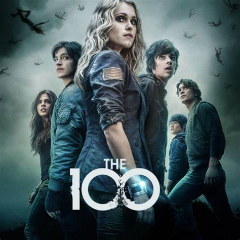

Guilherme Batista
Olá,me chamo Guilherme Batista tenho 17 anos,curso informatica na Way cursos
e curso español no
CCI (Centro Cearense De Indiomas)
Criei esse site no curso de informatica da Way cursos
Series que curto
The 100 2014 | Classificação etária: A16 | 7 temporadas |
Programas sobre política Quase 100 anos após um apocalipse nuclear devastar a Terra
The Last of Us é uma série distópica da HBO baseada na franquia de jogos de videogame de mesmo nome criada por Neil Druckmann.The Last of Us é uma série distópica da HBO baseada na franquia de jogos de videogame de mesmo nome criada por Neil Druckmann.